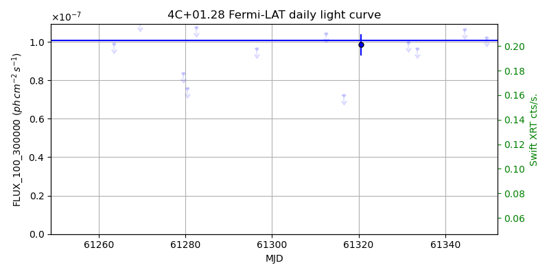
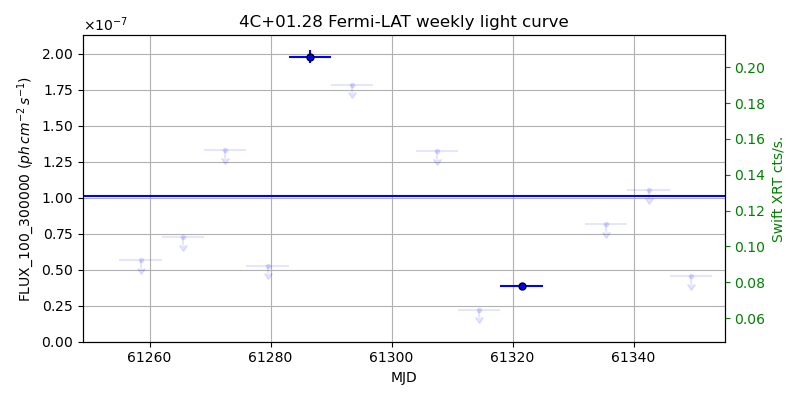
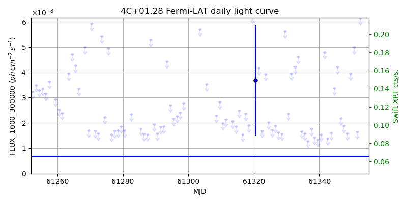
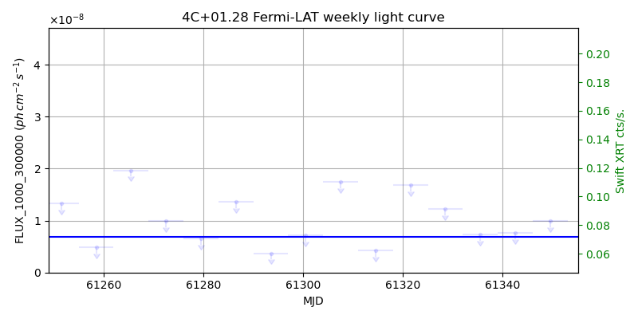

LAT Lightcurve site: https://fermi.gsfc.nasa.gov/ssc/data/access/lat/msl_lc/source/4C_p01d28
Swift site: https://www.swift.psu.edu/monitoring/source.php?source=4C+01.28
NED: Query
Time of last update of this page: UT: 2026-11-13 16:23 (MJD: 61357.683)
| Property | Value |
|---|---|
| R.A. | 10:58:29.52 |
| Dec. | 1:33:57.6 |
| z | 0.894 |
| 3FGL SpectrumType | LogParabola |
| 3FGL PL Index | |
| 3FGL Flux_100_300000 | 1.01e-07 1 / (s cm2) |
| 3FGL Flux_1000_300000 | 6.87e-09 1 / (s cm2) |
| 3FGL Flux >200 GeV | 4.85e-12 1 / (s cm2) |
| 3FGL Extrap. Crab >200 GeV | 0.02 |
| 3FGL Flux After EBL Absorption >200GeV | 1.29e-13 1 / (s cm2) |
| 3FGL EBL Crab Fraction >200GeV | 0.00 |

| MJD | dMJD | Flux | dFlux | Frac3FGL | FracCrab>200GeV | EBLFracCrab>200GeV |
|---|---|---|---|---|---|---|
| 61348.50 | 0.50 | 6.77e-07 | 0.00e+00 | 0.00 | 0.00 | 0.00 |
| 61349.50 | 0.50 | 1.02e-07 | 0.00e+00 | 0.00 | 0.00 | 0.00 |
| 61350.50 | 0.50 | 1.62e-07 | 0.00e+00 | 0.00 | 0.00 | 0.00 |
| 61351.50 | 0.50 | 5.24e-08 | 0.00e+00 | 0.00 | 0.00 | 0.00 |
| 61352.50 | 0.50 | 2.58e-07 | 0.00e+00 | 0.00 | 0.00 | 0.00 |

| MJD | dMJD | Flux | dFlux | Frac3FGL | FracCrab>200GeV | EBLFracCrab>200GeV |
|---|---|---|---|---|---|---|
| 61321.50 | 3.50 | 3.83e-08 | 1.62e-09 | 0.38 | 0.01 | 0.00 |
| 61328.50 | 3.50 | 3.59e-07 | 0.00e+00 | 0.00 | 0.00 | 0.00 |
| 61335.50 | 3.50 | 8.16e-08 | 0.00e+00 | 0.00 | 0.00 | 0.00 |
| 61342.50 | 3.50 | 1.05e-07 | 0.00e+00 | 0.00 | 0.00 | 0.00 |
| 61349.50 | 3.50 | 4.57e-08 | 0.00e+00 | 0.00 | 0.00 | 0.00 |

| MJD | dMJD | Flux | dFlux | Frac3FGL | FracCrab>200GeV | EBLFracCrab>200GeV |
|---|---|---|---|---|---|---|
| 61348.50 | 0.50 | 1.59e-08 | 0.00e+00 | 0.00 | 0.00 | 0.00 |
| 61349.50 | 0.50 | 3.96e-08 | 0.00e+00 | 0.00 | 0.00 | 0.00 |
| 61350.50 | 0.50 | 5.00e-08 | 0.00e+00 | 0.00 | 0.00 | 0.00 |
| 61351.50 | 0.50 | 1.64e-08 | 0.00e+00 | 0.00 | 0.00 | 0.00 |
| 61352.50 | 0.50 | 6.14e-08 | 0.00e+00 | 0.00 | 0.00 | 0.00 |

| MJD | dMJD | Flux | dFlux | Frac3FGL | FracCrab>200GeV | EBLFracCrab>200GeV |
|---|---|---|---|---|---|---|
| 61321.50 | 3.50 | 1.68e-08 | 0.00e+00 | 0.00 | 0.00 | 0.00 |
| 61328.50 | 3.50 | 1.22e-08 | 0.00e+00 | 0.00 | 0.00 | 0.00 |
| 61335.50 | 3.50 | 7.27e-09 | 0.00e+00 | 0.00 | 0.00 | 0.00 |
| 61342.50 | 3.50 | 7.56e-09 | 0.00e+00 | 0.00 | 0.00 | 0.00 |
| 61349.50 | 3.50 | 9.91e-09 | 0.00e+00 | 0.00 | 0.00 | 0.00 |
--------------------------------------------------------- Using user-supplied coords: 10:58:29.52 1:33:57.6 2000 --------------------------------------------------------- FLWO UT night of: 2026-11-14 Local Sid. @ Midnight: 03:09 Sunset (-15.0) (local, UT): 18:35 01:35 Sunrise (-15.0) (local, UT): 05:42 12:42 Moonrise (local, UT): Moonset (local, UT): 20:50 03:50 Moon phase: 0.22 --------------------------------------------------------- AzTime LSID UT Obj_el Obj_az Mn_el Mn_az Sep. --------------------------------------------------------- 18:35 21:44 01:35 -52.3 327.9 20.1 218.2 117.7 19:05 22:14 02:05 -55.2 339.7 16.0 223.7 117.8 19:35 22:44 02:35 -56.7 352.9 11.6 228.6 118.0 20:05 23:14 03:05 -56.7 6.6 6.9 233.2 118.2 20:35 23:44 03:35 -55.3 19.8 2.0 237.3 118.4 21:05 00:14 04:05 -52.5 31.6 -2.2 241.2 118.7 21:35 00:44 04:35 -48.6 41.8 -9.0 244.8 118.9 22:05 01:14 05:05 -44.0 50.4 -14.6 248.2 119.2 22:35 01:44 05:35 -38.8 57.7 -20.4 251.4 119.4 23:05 02:14 06:05 -33.2 63.9 -26.2 254.5 119.7 23:35 02:44 06:35 -27.4 69.4 -32.1 257.5 120.0 00:05 03:14 07:05 -21.3 74.2 -38.1 260.6 120.3 00:35 03:45 07:35 -15.1 78.7 -44.2 263.8 120.6 01:05 04:15 08:05 -8.7 82.8 -50.2 267.1 120.9 01:35 04:45 08:35 -1.4 86.9 -56.3 270.9 121.2 02:05 05:15 09:05 4.2 90.8 -62.4 275.3 121.6 02:35 05:45 09:35 10.5 94.8 -68.4 281.1 121.9 03:05 06:15 10:05 16.8 98.9 -74.2 289.9 122.2 03:35 06:45 10:35 23.1 103.3 -79.6 306.2 122.6 04:05 07:15 11:05 29.2 108.1 -83.2 343.5 122.9 04:35 07:45 11:35 35.2 113.5 -82.1 35.1 123.2 05:05 08:15 12:05 40.9 119.7 -77.4 61.2 123.6 05:35 08:45 12:35 46.3 127.0 -71.8 73.4 123.9 05:42 08:52 12:42 47.4 128.8 -70.5 75.2 124.0 --------------------------------------------------------- Dark hours >55 deg.: 0.00